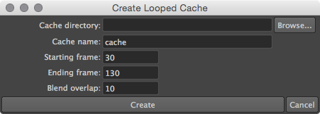
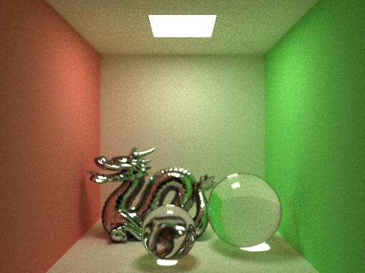
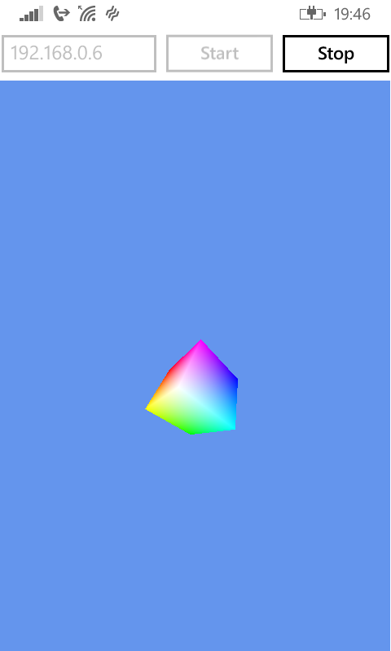
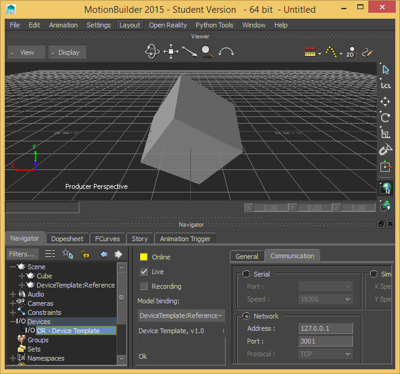
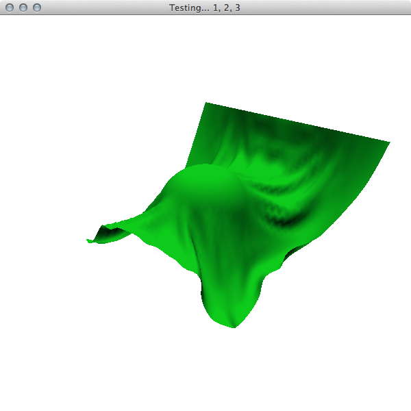
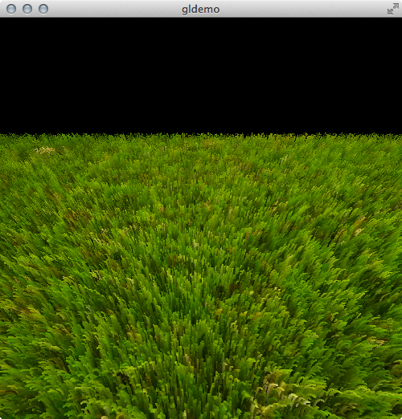

A 2D story-based puzzle game produced by Team Potato Lab (Aaron Villalpando, Cindy To, Katie Park, Ronald Yam, and yours truly) for UT Austin's Fall 2014 2D Game Development Capstone. Check out the trailer below! Visit our website for more info and to play the game.
Ronald Yam and I created most of the animations for the game. I rigged the character while he animated it. Cindy To created most of the base artwork for animated assets.

To make our character's cloth animate seamlessly, we created a MEL script for Maya that loops nCloth simulations (view on GitHub).
Open-source Maya C++ plugin (view on GitHub) and 3ds Max C++ plugin (view on GitHub).
Water drop demo simulated with the plugin (play on Vimeo).
Based on Jerry Tessendorf's ocean simulation course notes from Siggraph 2004. Both the Maya and 3ds Max plugins support generating ambient waves on an open ocean.
At the heart of the process, they use an FFT to sum many individual waves constructed from a statistical model. The 3ds Max version also supports dynamic interaction with collision objects using a convolution kernel over a grid of wave points (Tessendorf's “iWave” method).
3ds Max modifier (view on GitHub) and Houdini SOP (view on GitHub).
The terrain outside the window is completely procedurally generated in 3ds Max (play on Vimeo). These plugins implement the diamond-square algorithm. It generates terrain of varying roughness, from deserts to mountains.
A Rube Goldberg machine in Houdini using rigid bodies, wires, and FLIP fluids. 100% simulated; no keyframes (except for the motion of the camera). Houdini Apprentice / rendered in Mantra (play on Vimeo).
A simple animation of a cloud creating a heart shape. Uses volumetric cloud simulation in Houdini, with blendshapes (morph targets) driving the heart animation. Houdini Apprentice / rendered in Mantra (play on Vimeo).

A Monte Carlo global illumination path tracer in C++ (view on GitHub). Uses the Intel Embree kernels for ray tracing. This Cornell box demonstrating different physically-accurate materials took 30 minutes to render.
Click to try the Portable Native Client (PNaCl) version of the path tracer in your web browser.
This row of spheres demonstrates rendering with depth of field (the aperture being ƒ/16 in this image). The rendering was stopped after about 20 minutes and 800 iterations. (Timings recorded on a 2.3 GHz Intel Core i5.)
A parallelized micropolygon renderer in Scala (view on GitHub). Uses the Reyes algorithm popularized by Pixar's RenderMan. Supports Bézier patches, displacement mapping, shadow maps, toon shading, and animation.
This Windows Phone app (view on GitHub) transmits your phone's physical 3D orientation. Make a MoBu object mimic your phone's rotation in realtime!

The matching TCP server and MotionBuilder plugin (view both together on GitHub) run on a local computer to receive the phone's orientation, letting you control objects in MotionBuilder by physically rotating your phone.
The TCP server runs on the same computer as MotionBuilder and simply relays orientation data from the phone to the MotionBuilder plugin. (This made testing easier!)

Implemented in Scala using OpenGL via the Java OpenGL libraries (view on GitHub). Simulates a simple mass-spring cloth system using Verlet integration. It supports cloth collision with a sphere.

Screenshot of the simulation running in realtime (video on Vimeo).
Implemented in C++ using OpenGL shaders (view on GitHub). Uses a “shell” shader method, based off of Catalin Zima's article for the XNA game engine. This implementation uses OpenGL 3.3 Core with GLSL shaders, and it also works well for rolling grass.

Screenshot (video on Vimeo).
Thanks for visiting! I last updated my homepage on 14 January 2015.